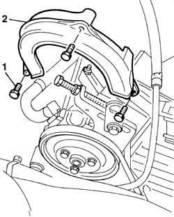

1092C13 power steering pump drive guard -arrange
- Path
- Procedures > 10 ENGINE > 1092 ENGINE COMPONENT MISCELLANEOUS DRIVES > 1092C POWER STEERING/SELF-LEVELLING SUSPENSION PUMP DRIVE > 1092C13 power steering pump drive guard -arrange
- Kind
- repair procedure (removal / refitting; the operation number is the code)
- Applies to
- all engines; all production periods
- Interactive page
- https://sloeber94.github.io/elrnDB-fDbl/en/#/2584379
Applies to: all engines; all production periods
 Removing
Removing
 Refitting
Refitting1. Undo the belt plastic guard retaining bolts.
2. Remove the power steering pump belt guard.

Applies to: all engines; all production periods
Refitting
RemovingFit the power steering belt guard and tighten the fixing bolts.